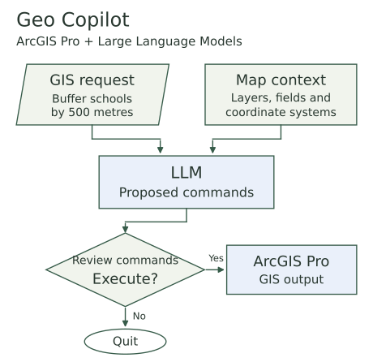
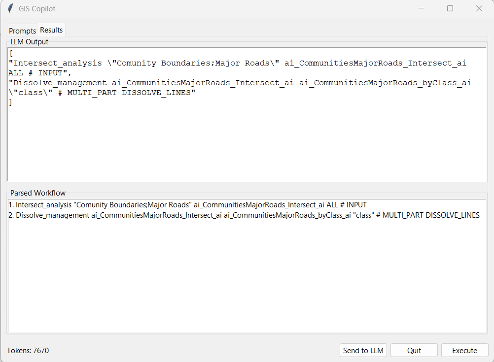
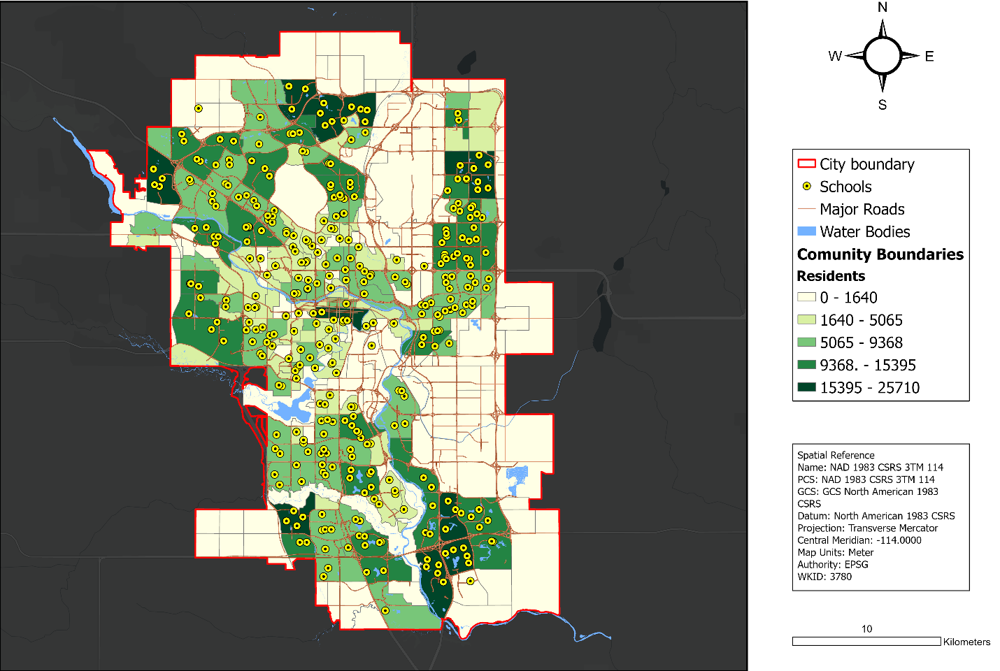
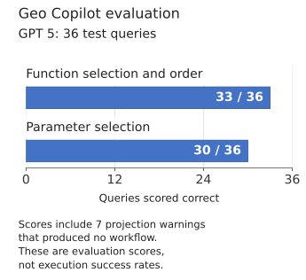
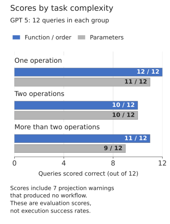
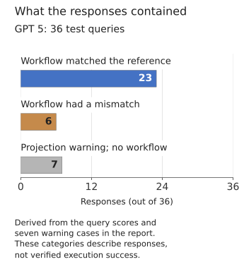
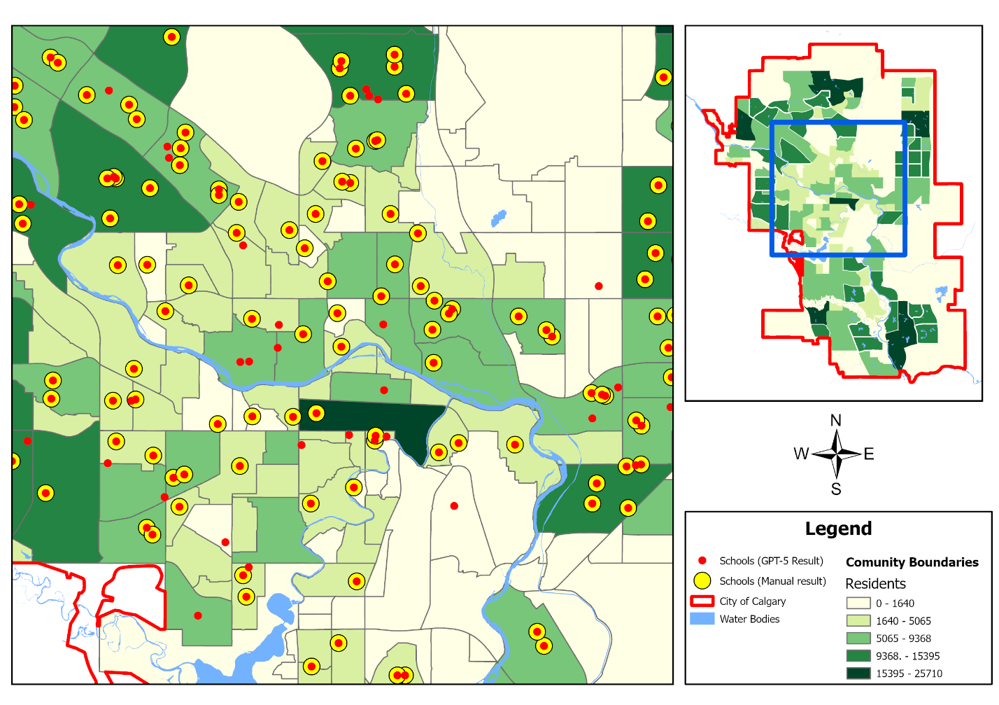

Code & tools
Geo Copilot
Someone asking for schools near a road may know the question without knowing which ArcGIS tools to use or how to pass one result to the next. I built Geo Copilot to let them describe the task in ordinary language, using the layers already open in ArcGIS Pro.
The prototype connects GPT 5 or a locally hosted Llama model to ArcGIS Pro. I developed the script tool, prompts and review interface, then tested whether the models chose the right operations and parameters. I wanted the project to include evidence of where the approach worked and where it needed more work.
- My contribution
- Design, development and evaluation
- Tool definitions
- 12 geoprocessing operations
- Evaluation
- 36 queries, two models
- Project report
- December 2025
- Tools
- ArcGIS Pro, Python, ArcPy, Tkinter, OpenAI API, Ollama
How Geo Copilot works


Overview of the main interaction. Map metadata is collected when the tool starts. The user reviews the prompt before sending it and reviews the returned commands before choosing Execute. Response format checks happen before execution is enabled.
Inspect details: How Geo Copilot worksBuilding the request from the active map
A model cannot choose a useful input if it does not know what data is available. When the tool starts, I collect the active layers, geometry types, field names and types, coordinate systems and map units. The request also includes the workspace and scratch workspace settings.
I defined 12 available operations, including buffers, overlays, selections and field calculations. Each definition contains the command syntax, an example and the position of the output parameter. The prompt asks the model to use these tools and the supplied layers, keep distance and units together, and flag projection conflicts.
The model returns an ordered list of command strings. I use arcpy.Command to run those strings, which gave the tool one way to execute the different operations. The tool definitions guide the model through the prompt; they are not yet enforced by a separate command validator.
Keeping the user involved
I built two review stages into the Tkinter window. The Prompts tab shows what will be sent to the model, including the map context. The user chooses Send to LLM when they are ready. The Results tab then shows the original response alongside the commands extracted from it.
The parser checks that the response is a Python list of strings before enabling Execute. Layer choices, distances and operation order still need review. Choosing Execute runs the commands in sequence; an execution error is reported and stops that sequence. The user can also quit without running it.
The command review window


An actual response for intersecting communities with major roads and dissolving the result by class. The original model response stays visible above the parsed commands.
Inspect details: The command review windowTesting against work I had done manually
I used Calgary schools, major roads, water bodies and boundaries from the City of Calgary open data portal. Working with a known set of layers let me compare the model responses with operations I could inspect and carry out myself.
I prepared 36 queries and completed each one manually, recording the required functions, their order and their parameters. Twelve queries used one operation, twelve used two, and twelve required more than two. Examples ranged from a 500 metre school buffer to selecting elementary schools near roads and copying the selection.
Both models received the same queries. I scored function selection and order separately from parameter selection. A wrong function sequence also received a zero parameter score, so the measures are related. This produced 72 model responses to compare with the manual references.
The layers used for testing


The Calgary map from my report. These layers supplied the features, attributes and spatial relationships used in the test queries. The community colours show resident counts.
Inspect details: The layers used for testingWhat the two models returned
GPT 5 received a correct function and order score on 33 of 36 queries, and a correct parameter score on 30. Those totals include seven projection warnings that received full scores because the model followed the instruction to flag the conflict instead of proposing a reprojection. They are evaluation scores, not counts of completed analyses.
The local Llama 3.1 8B model returned paragraphs instead of parseable command lists on all 36 queries. I had chosen that model because I could host it on the available computer. The result describes this model, prompt and setup; it does not settle whether a different local model could perform the work.
Overall evaluation scores


Each query was scored against the manual reference. For workflow responses, function and order had to match; parameters also had to match for a correct parameter score. Seven projection warnings without a workflow received full scores under the evaluation rules. These two measures are not independent.
Inspect details: Overall evaluation scoresLooking at the number of operations
Parameter scores were 11 of 12 for single operation queries, 10 of 12 for two operations and 9 of 12 for longer workflows. Function and order scores were 12, 10 and 11 respectively. Choosing the tools and filling their parameters were different problems.
The counts helped me locate the weaker cases, but this small test set did not establish a statistically significant relationship between complexity and accuracy. I would not use the pattern alone to predict how another workflow will perform.
Scores by task complexity


Twelve queries were tested in each group. Seven projection warnings are included in the scores: one in the first group, three in the second and three in the third.
Inspect details: Scores by task complexitySeparating warnings from workflows
I also separated the seven warning responses from the score totals to make their meaning clearer. Of the 36 GPT 5 responses, 23 proposed workflows matched both the function and parameter reference. Six contained a mismatch. Seven reported a projection conflict without producing a workflow.
This breakdown is derived from the query score table and the warning cases recorded in the report. A warning can be an appropriate response to the data, but it is different from a completed GIS operation. The chart keeps those outcomes separate.
What the responses contained


Derived from the report: 30 parameter correct scores minus seven warning responses leaves 23 matching workflows. Six responses had a function or parameter mismatch. This is a classification of recorded responses, not an execution success rate.
Inspect details: What the responses containedThe missing school filter
Query Q50 asked for elementary schools within 500 metres of major roads, followed by a copy of that selection. The model skipped the attribute filter for elementary schools. That left a result which could look reasonable on the map while answering a different question.
The comparison shows the manually selected schools in yellow and the model result in red. The mismatch was a useful reminder to check the selection criteria as well as the position of the points.
The other recorded errors were different: two queries introduced extra operations, and three used incorrect parameters even though the function sequence was right. I kept those distinctions in the evaluation because an overall score would hide what needed correcting.
Q50: the effect of a missed selection


The request was to select elementary schools within 500 metres of major roads and copy the selection. Yellow points show the manual result; red points show the model result. The elementary school attribute filter was missing from the model workflow.
Inspect details: Q50: the effect of a missed selectionWhat I would build next
Adding a new operation currently means editing the tool definition dictionary. I would make that configurable through the interface and add independent checks of proposed tool names, inputs and parameter structure before execution.
I would also test larger local models, more datasets and a broader set of requests. The report did not measure time savings or usability with other users, so those would need their own evaluation. I would keep the prompt and command review visible as the tool develops, especially for requests where one missing selection changes the result.
Data and references
- Geo Copilot source code (opens in a new tab)
- Original project interface screenshots (opens in a new tab)
- Evaluation and figures: my Geo Copilot report, December 2025. Methods, results and Appendix B query scores.